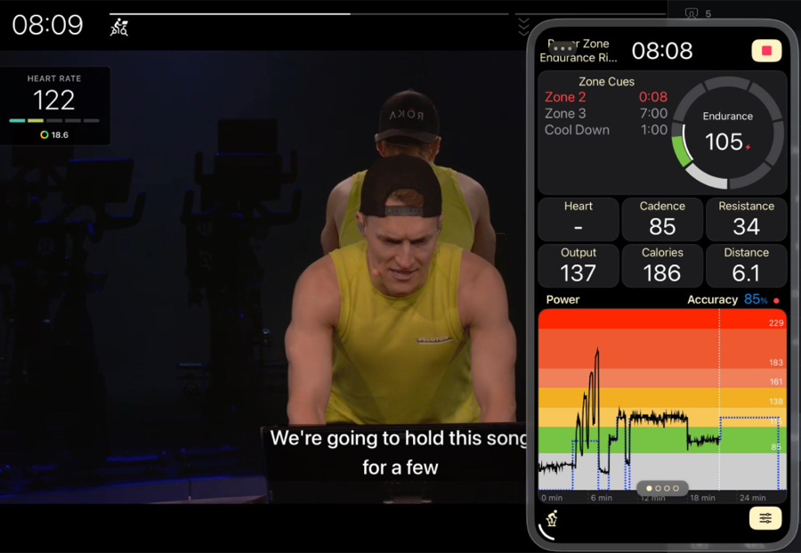

Tracking with an iPhone, iPad or Both?
One of the most common support questions we get is: “What device should I run mPaceline Pulse on during my Peloton class?”
Below, we’ll walk through the most common setups to help you choose what works best for you.
Peloton Equipment Owners
If you own a Peloton Bike, Tread, or Row, you’ll typically use a single device to run mPaceline Pulse.
Most riders choose to use an iPhone, mounted to:
-
The handlebars on a Bike
-
The crossbar on a Tread
-
A cup or accessory mount on a Row
This setup lets you keep your focus on the Peloton screen while easily glancing at mPaceline Pulse for enhanced cues, zone guidance, and additional metrics. While it’s possible to mount an iPad, the vast majority of users find an iPhone to be the most practical and convenient option.
Peloton App Users
Peloton App users have a few more setup choices since the class itself must run on a device. Many users prefer to run the Peloton App on an iPad or a TV for the larger display, few choose an iPhone.
Common setups:
-
Peloton App on a TV or large display
Run mPaceline Pulse on your iPhone and mount it to your Bike, Tread, or Rower. This is a very popular and clean setup.
-
Peloton App on an iPad
You have two good options:
-
Use a second device (typically an iPhone) for mPaceline Pulse
-
Run both the Peloton App and mPaceline Pulse on the iPad
When running both apps on an iPad:
-
The Peloton App runs full-screen
-
mPaceline Pulse can be floated on top so both remain visible
-
While mPaceline Pulse covers a small portion of the Peloton screen, it doesn’t interfere with following the class
New in iOS 26, you can also run the Peloton App and mPaceline Pulse side-by-side in separate windows, giving you a clean, split-screen experience.
-
Want to See It in Action? 
There’s a walkthrough video showing how to use an iPad with both apps in the mPaceline Facebook Community.
Visit the group and search for the video to see the setup in action.